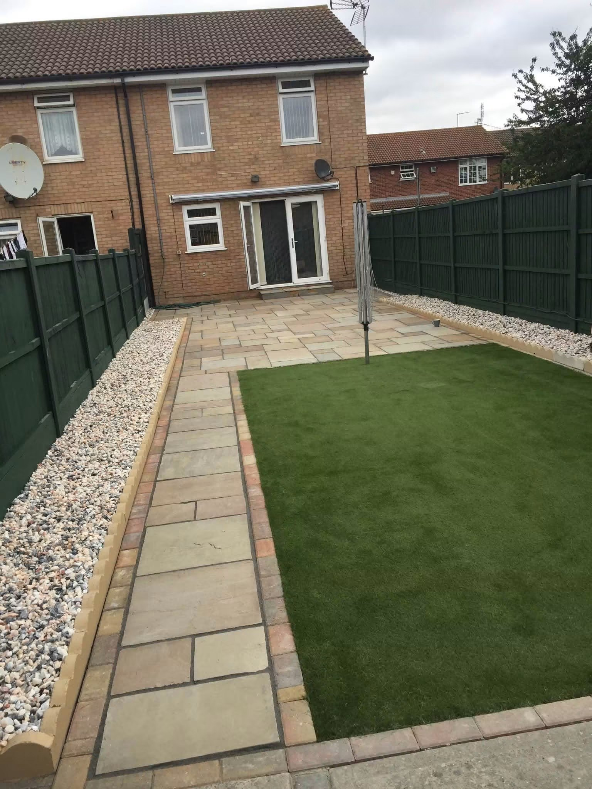
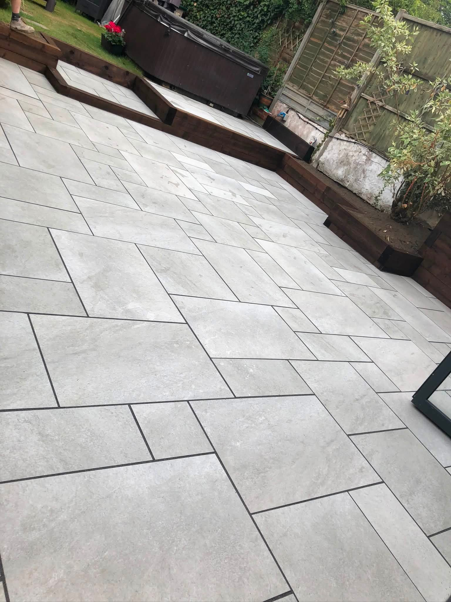
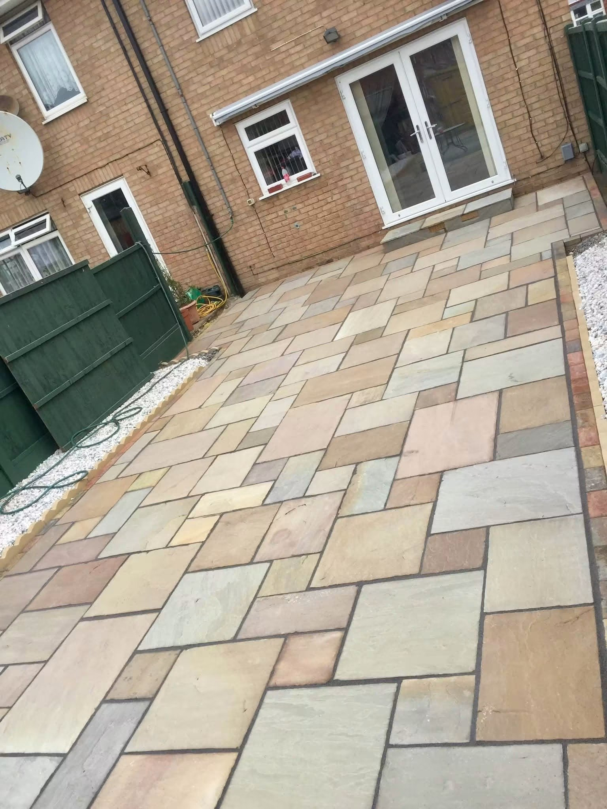
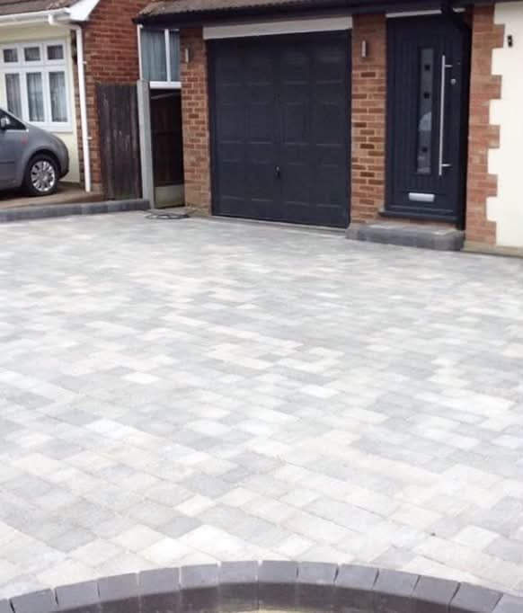
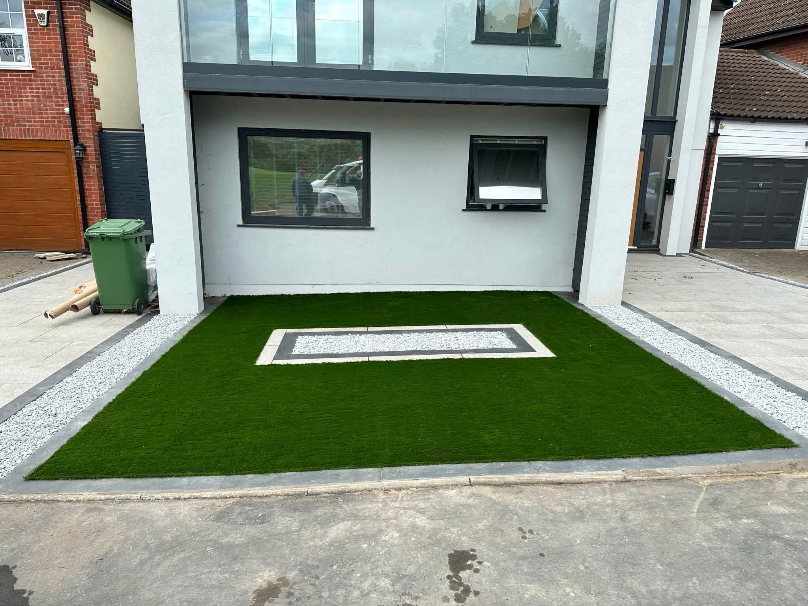
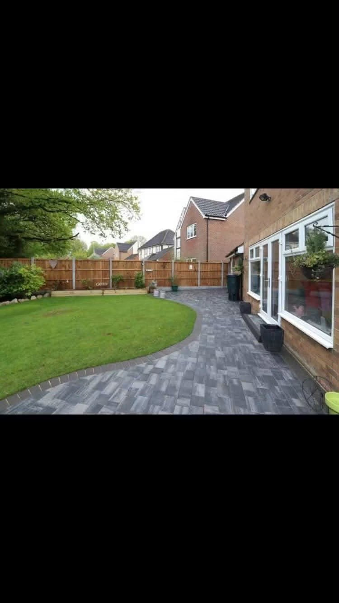
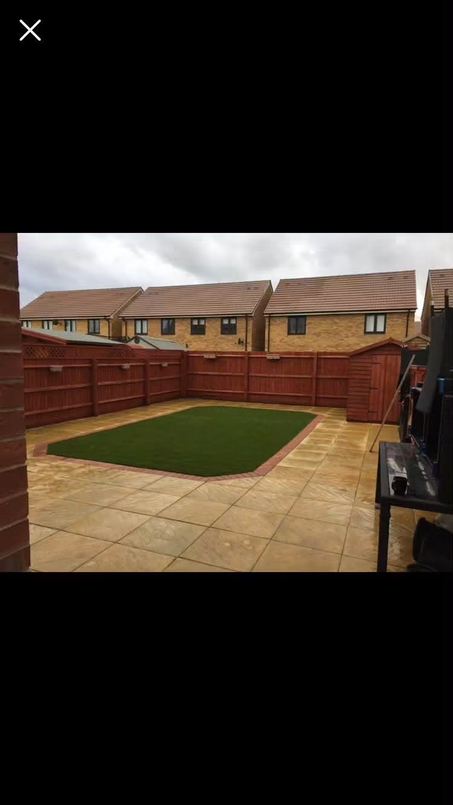
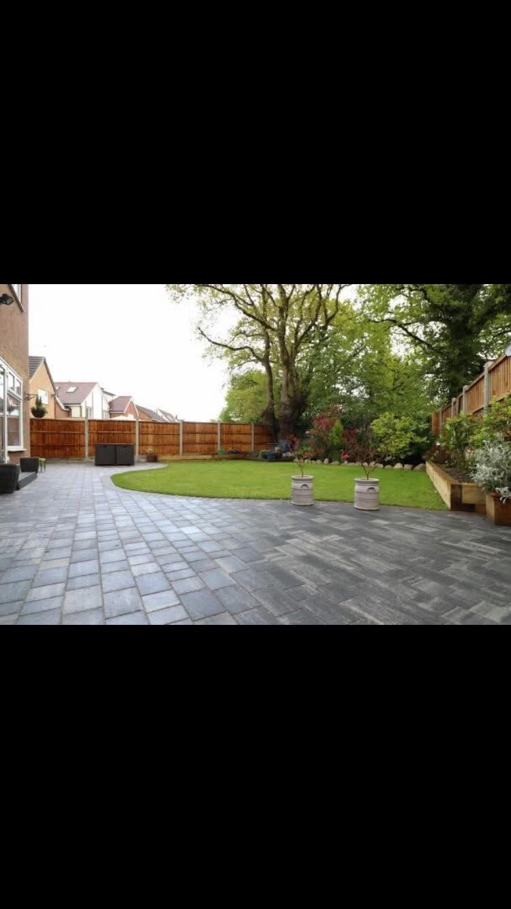
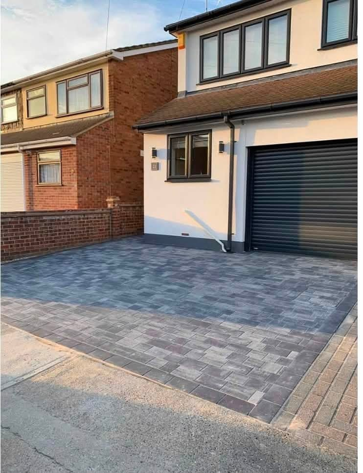

Garden Landscaping in Essex
Garden Landscaping in Essex
The right balance of lawn and paving can turn an outdoor area into a more usable space. These project photos show clear paths, fresh greens and connected patio areas. Tell us what you are planning and include the location of the work to get started.
Request a quote →
Block paved driveways & Patios & paving
Make more room for outdoor living.
Large paving areas, contrasting borders and defined edges give an outdoor space a practical layout. Explore the projects below for examples of finished patios and driveways.
Discuss your project →

RECENT WORK
Garden Landscaping in Essex in pictures.
Explore garden landscaping projects in Essex, with lawns, paths and paved areas brought together by Landscape Specialists.




PROJECT DETAILS
Different spaces. The same attention to detail.
Patios and driveways each bring a different use to the outdoor space.
Discuss your project →
Essex
Success built on quality.
Landscape Specialists is an Essex business specialising in block paving and landscaping. Contact Karl with your location and plans to discuss the work you have in mind.
Grey and natural-tone block paving gives the front of a property a defined finish.
From large-format slabs to mixed stone colours, see the choices in the portfolio.
Paths, lawns and patios can work together as one usable outdoor area.
GOOD TO KNOW
Your questions answered.
Where do you work?
Essex is the supplied service area. Include your postcode so the location can be checked.
Can I send photos with my enquiry?
Yes. The form opens WhatsApp with your details. Attach photos of the space before sending.
How do I get a quote?
Call 07769 509542 or send the work details through the WhatsApp form. You can discuss the project and next steps directly.
REQUEST A QUOTE
Tell us what you have in mind.
Send the details of your project and its location. WhatsApp opens with your enquiry ready to send, where you can also attach photos.
Landscape Specialists
Ready to discuss your project?
Essex